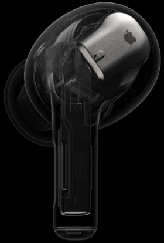

The chip uses powerful adaptation algorithms to process sound more quickly, tuning audio at the precise moment you hear it. Every detail is rendered for your specific ear shape, immersing you in higher-fidelity sound .
An inward-facing microphone works with voice enhancement algorithms to recognize and articulate your voice, so your phone and video calls always sound completely natural .


A custom-built driver and amplifier work with the H2 chip to provide lower distortion during playback, so you’ll hear deeper bass and crisper highs — across all volume levels.